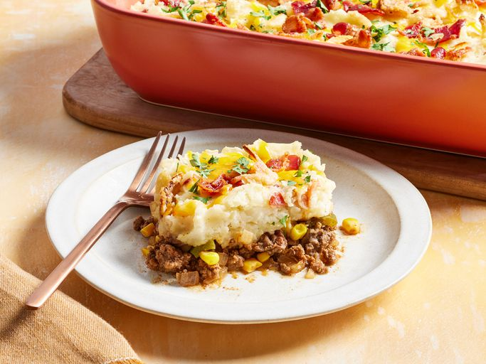

Cowboy Mashed Potato Casserole

Description
This cowboy mashed potato casserole, a smoky beef and veggie mixture topped with creamy mashed potatoes, is like a cowboy version of a shepherds pie. The crispy bacon and French fried onions on top add crunch and flavor.
Ingredients
- cooking spray
- 6 strips bacon
- 2 pounds baking potatoes, peeled and chopped
- 1 (5 ounce) can evaporated milk or whole milk
- 2 tablespoons butter
- 1 1/2 teaspoons salt, divided
- 1/2 teaspoon freshly ground black pepper, divided
- 1 pound ground beef
- 1 cup chopped onion
- 1 green bell pepper, chopped
- 1 cup frozen whole kernel corn
- 2 cloves garlic, minced
- 1 1/2 teaspoons smoked paprika
- 1/4 cup barbecue sauce
- 1 tablespoon Worcestershire sauce
- 1 teaspoon Dijon mustard
- 1/2 cup shredded Cheddar or pepper Jack cheese
- 1/4 cup canned French fried onions
- 2 tablespoons finely chopped fresh parsley
Home